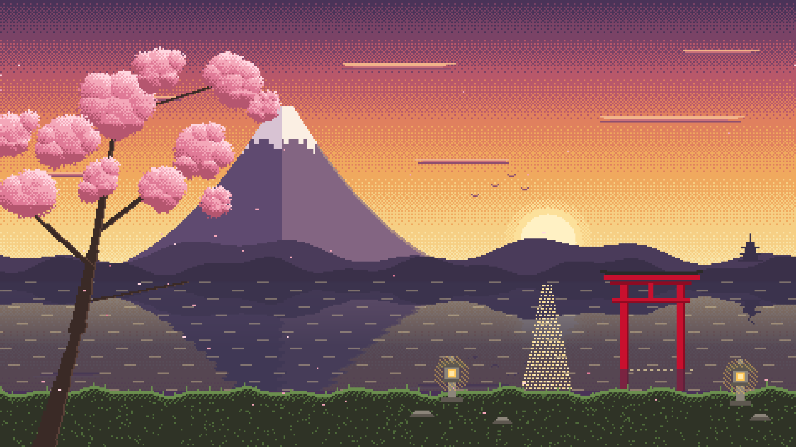
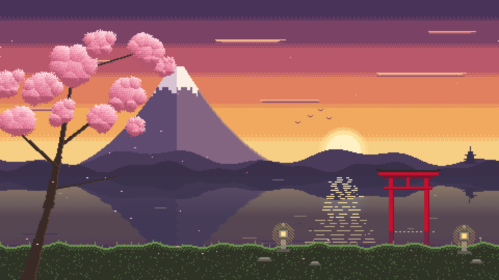

Papel de parede — v1 × v2
Mesma composição. Na v2 mudam só o céu, o halo do sol, a água e o reflexo do sol. O papel de parede instalado continua sendo a v1 até você decidir.
Lado a lado


Alternar na mesma posição
Ampliação 4× — céu perto do sol
Ampliação 4× — água e reflexo do sol
O que mudou (medido na resolução nativa 480×270)
| Área | v1 | v2 |
|---|---|---|
| Céu | pontilhado em toda a altura | faixas lisas, pontilhado só nos últimos 22% de cada faixa · trocas de cor entre pixels vizinhos: 32.396 → 11.010 (−66%) |
| Halo do sol | anel pontilhado | anel sólido, 3 px |
| Água | traços curtos em grade regular a cada 5 linhas | poucos traços esparsos, de comprimentos variados · trocas: 9.812 → 4.117 (−58%) |
| Reflexo do sol | triângulo de pontos | faixas horizontais interrompidas, larguras variadas, esmaecendo até a margem |
| Sakura, Fuji, torii, margem | idênticos: 0 pixels diferentes | |